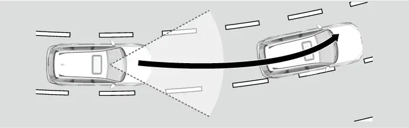
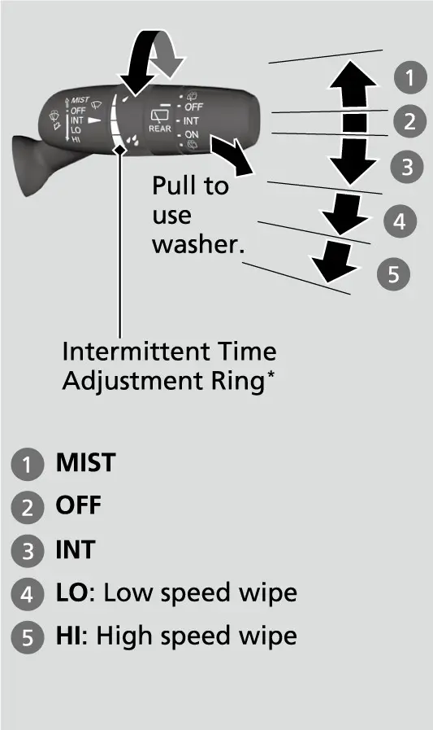
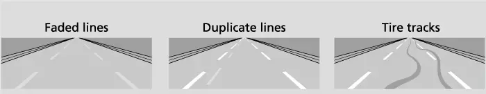
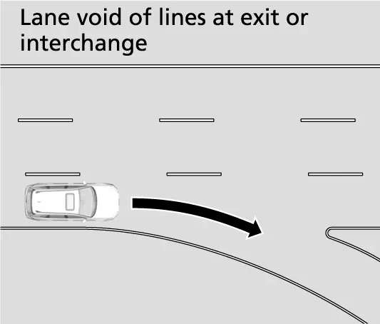
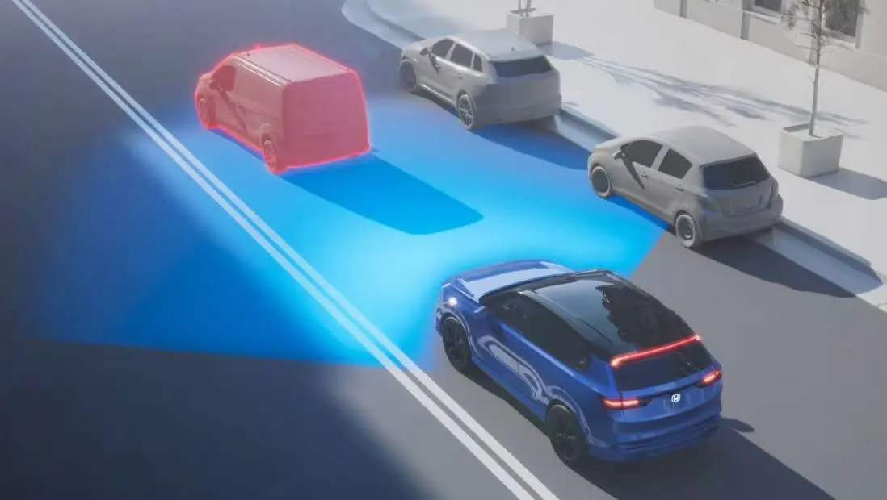

קאפיטל 10
ליין-קיפינג, שטארקער רעגן און שלעכטע זעאונג
זייטן 173–184 אינעם PDF
וואס די ליין סיסטעמען זענען, און וואס זיי זענען נישט
דער וויכטיגסטער זאץ וועגן ליין-האלטן שטייט געדרוקט אינעם אונער'ס מאנואל: דער Lane Keeping Assist LKAS(System, די הילף צו בלייבן אין ליין) איז נאר פאר אייער באקוועמליכקייט. עס איז נישט קיין זעלבסט-דרייווענדיגער סיסטעם, און עס פאדערט שטענדיג אייער אויפמערקזאמקייט און קאנטראל. עס ארבעט נישט אויב איר נעמט אראפ די הענט פונעם סטירינג וויל אדער איר הערט אויף צו דרייען. Honda שרייבט אז LKAS איז מערסטנס באקוועם אויף עקספרעסוועיס און פריוועיס. קאפיטל 9 ערקלערט די קנעפלען אויפן סטירינג וויל און די גרונט Honda Sensing מעניוס. דער קאפיטל ערקלערט ווי די ליין סיסטעמען פירן זיך אין אמת'ע באדינגונגען, בפרט ווען דאס וועטער, די ליכט און די ליניעס אויפן וועג ווערן שווער.
איין קאמערע זעט אלעס
יעדער סיסטעם אין דעם קאפיטל הענגט אפ אין איין טייל: די פראנט סענסאר קאמערע הינטער דעם שפיגל אויבן אויף דער פראנט שויב. לויטן מאנואל דינט זי פאר דעם Collision Mitigation Braking System (CMBS, אויטאמאטישע ברעמז כדי צו פארמיידן א קראך(, Road Departure Mitigation)RDM, הילף נישט ארויסצוגיין פונעם וועג(, Adaptive Cruise Control)ACC, קרוז וואס האלט אפשטאנד) מיט Low Speed Follow, LKAS, Traffic Jam Assist, Traffic Sign Recognition און Auto High-Beam. דער ראדאר סענסאר הינטער דעם Honda עמבלעם אויפן גריל איז א באזונדערער סענסאר. פאר די ליין סיסטעמען איז די קאמערע דער טייל וואס כאפט די ליניעס. אויב זי קען נישט קלאר זען די פארב, קענען די ליין סיסטעמען אייך נישט העלפן.
ווי צו לייענען דעם ליין דיספליי אויפן 7-אינטש מעטער
אין שלעכט וועטער איז די ליין בילד אויפן EX'ס 7-אינטש TFT מעטער (וואס דער מאנואל רופט A-type meter) די וויכטיגסטע זאך צו היטן. דער קאר קען זיך פילן גענוי די זעלבע סיי ווען דער סיסטעם דרייט מיט אייך און סיי ווען נישט, דעריבער איז דער דיספליי אייער איינציגער זיכערער סיגנאל.
LKAS און Traffic Jam Assist דיספליי מצבים
| דיספליי | באדייט |
|---|---|
| ווייסער LKAS אינדיקאטאר | סיסטעם ווארט (standby) |
| גרינער LKAS אינדיקאטאר | סיסטעם ארבעט |
| געלער (אמבער) LKAS אינדיקאטאר | א פראבלעם מיטן סיסטעם |
| ווייסע ליין ליניעס | ליין ליניעס זענען געכאפט |
| גרינע ליין ליניעס | סיסטעם ארבעט, דרייט מיט אייך |
| געלע ליניע | דער קאר גייט ארויס פון ליין |
דער פראקטישער כלל: ווען די ליניעס ווערן ווייס אדער פארשווינדן, דרייט איר אליין.
Lane Keeping Assist System (LKAS)
LKAS האט צוויי טיילן. די lane keep support פונקציע (הילף צו בלייבן אינמיטן ליין) העלפט האלטן דעם קאר אין מיטן: ווען איר קומט נאנט צו א ווייסע אדער געלע ליניע, שטופט די עלעקטרישע power steering א ביסל שטארקער. די lane departure warning פונקציע (ווארענונג ווען מען גייט ארויס פון ליין) גיט א לייכטע ציטערניש אינעם סטירינג וויל און א ווארענונג אויפן דיספליי ווען דער קאר גייט אריין אין דעם ווארענונג געגנט. LKAS ווארנט נאר ווען דער קאר רוקט זיך אוועק אן א טורן סיגנאל. Honda'ס פיטשער גייד לייגט צו אז די קאמערע קען דערקענען Botts' Dots (די קליינע ארויסשטעקנדיגע קיילעכדיגע צייכנס אויפן וועג) אויך, נישט נאר געפארבטע ליניעס.

ווען LKAS קען ארבעטן
אלע די פאלגנדע מוזן זיין ריכטיג:
- די גיכקייט איז בערך צווישן 45 און 90 mph (72 און 145 km/h).
- דער ליין האט ליניעס וואס מען קען כאפן אויף ביידע זייטן, און דער קאר איז נאנט צום מיטן.
- דער וועג איז גלייך אדער לייכט געבויגן.
- די טורן סיגנאלן זענען אויסגעלאשן.
- מען דריקט נישט פלוצלינג אויפן ברעמז פעדאל.
דער מאנואל שרייבט אויך אז LKAS קען נישט ארבעטן ווי געדארפט אין טראפיק וואס שטעלט זיך אפט אפ און פארט ווייטער, אדער אויף וועגן מיט שארפע קורוון.
LKAS אנצינדן און אויסלעשן
- דריקט דעם LKAS קנעפל אויפן סטירינג וויל; דער ווייסער LKAS אינדיקאטאר באווייזט זיך און דער סיסטעם ווארט (standby).
- ווען ליין ליניעס ווערן געכאפט, באווייזן זיך ווייסע ליניעס אויפן מעטער.
- האלט דעם קאר נאנט צום מיטן פונעם ליין; ווען ביידע ליניעס זענען געכאפט, ווערן דער אינדיקאטאר און די ליניעס גרין און דער סיסטעם ארבעט.
- כדי אפצושטעלן, דריקט נאכאמאל דעם LKAS קנעפל.
אויב איר דריקט דעם קנעפל ווען אלע באדינגונגען זענען שוין דא, גייט LKAS גלייך צו ארבעטן אן standby. LKAS לעשט זיך אויס יעדעס מאל וואס איר שטעלט אפ דעם מאטאר, אפילו אויב ער איז געווען אן ביי אייער לעצטער פארט.
Suspended (אפגעשטעלט אויף א ווייל): צייטווייליג, און עס קומט צוריק
LKAS קען זיך אליין אפשטעלן אויף א ווייל ווען:
- דער קאר פארט אויף דער רעכטער אדער לינקער זייט פונעם ליין.
- דער סיסטעם כאפט נישט די ליין ליניעס.
- מען דרייט שנעל דעם סטירינג וויל.
- איר דרייט נישט דעם קאר.
- איר פארט דורך א שארפן קורוו.
- די גיכקייט גייט איבער בערך 94 mph (150 km/h).
- ABS אדער VSA ארבעט (VSA איז Vehicle Stability Assist, דער סיסטעם וואס האלט דעם קאר פון גליטשן).
- מען דריקט פלוצלינג אויפן ברעמז פעדאל.
ווען LKAS שטעלט זיך אפ אויף א ווייל, ווערן די גרינע ליניעס ווייס אדער פארשווינדן, און א ביפ הערט זיך אויב איר האט עס אנגעצונדן. ווען דער מצב גייט אוועק, הייבט LKAS ווידער אן אליין.


Canceled (אינגאנצן אפגעשטעלט): ערנסטער
Suspended און canceled זענען נישט דאס זעלבע. דער מאנואל שרייבט אז LKAS קען ווערן canceled ווען די קאמערע ווערט זייער הייס, אדער ווען די קאמערע אדער דער ארט ארום איר, אריינגערעכנט די שויב, איז שמוציג. די ליין ליניעס פארשווינדן און דער ביפער קען זיך הערן. דער מאנואל שרייבט אויך אז ווען דער סיסטעם כאפט נישט די ליינס ווערט ער צייטווייליג canceled, און ער קומט צוריק אליין ווען א ליין ווערט געכאפט.
Suspended קעגן canceled
| מצב | רעזולטאט | וואס צו טון |
|---|---|---|
| ליניעס פעלן, שארפער קורוו | Suspended | גארנישט; עס קומט צוריק אליין |
| ABS אדער VSA ארבעט | Suspended | גארנישט; עס קומט צוריק אליין |
| קאמערע זייער הייס | Canceled | אפקילן דעם ארט פון דער קאמערע |
| שמוציגע שויב ביי דער קאמערע | Canceled | פארקירן און רייניגן די שויב |
איר קענט אנצינדן אדער אויסלעשן דעם suspend ביפ אין Vehicle Settings ("Lane keeping assist)"suspend beep; די זעלבע איינשטעלונג גילט אויך פאר Traffci Jam Assist. לאזט עס אן: אין רעגן איז דאס דער קלארסטער סימן אז דער סיסטעם האט אפגעלאזט.
Road Departure Mitigation (RDM)
RDM ארבעט אן דריקן קיין שום קנעפל. די קאמערע קוקט אויף ווייסע אדער געלע ליין ליניעס, אויף דעם עק פונעם אספאלט וואו עס טרעפט זיך מיט גראז אדער א שאטער זייט, און אויף קארס וואס קומען אנטקעגן. Honda'ס פיטשער גייד שרייבט אז ער קען אויך דערקענען Botts' Dots און cat's-eye צייכנס (קליינע שיינענדיגע צייכנס אויפן וועג(. Honda באשרייבט Lane Departure Warning)LDW, ווארענונג ווען מען גייט ארויס פון ליין) אלס טייל פון RDM; דער פיטשער גייד שרייבט אז LDW ווארנט מיט א בילדל אויפן אינסטרומענט פאנעל און מיט א קול.
RDM ווערט אקטיוו נאר ווען אלע די זענען ריכטיג: גיכקייט בערך צווישן 45 און 90 mph (72 און 145 km/h), א גלייכער אדער לייכט געבויגענער וועג, טורן סיגנאלן אויסגעלאשן, און דער סיסטעם האלט אז איר גיט נישט אקטיוו גאז, ברעמזט נישט און דרייט נישט.
וואס RDM טוט
ווען RDM מישט זיך אריין, באווייזט זיך א "Lane departure" מעלדונג אויפן מעטער, דער סטירינג וויל ציטערט שנעל, און דער סיסטעם העלפט אייך צוריקדרייען אין ליין. Honda'ס פיטשער גייד שרייבט אז ער ניצט די עלעקטרישע power steering צו פירן דעם קאר צוריק אין זיין ליין, אדער צו פארלאנגזאמען ווי ער גייט ארויס פונעם וועג. ווי נאר איר דרייט אליין דעם וויל, הערט RDM אויף צו העלפן. אויב ער ארבעט עטליכע מאל און כאפט נישט קיין רעאקציע פון אייך, ביפט ער. ווען LKAS איז אויסגעלאשן, קען זיך אויך באווייזן א מעלדונג ווען דער סיסטעם האלט אז איר קענט אריבערגיין א ליניע, דעם עק פונעם אספאלט, אדער צו א קאר וואס קומט אנטקעגן.
איינשטעלונגען און גרעניצן
לעשט אן אדער אויס RDM אונטער Safety Support אויפן driver information interface (דער דרייווער אינפארמאציע דיספליי, זעט קאפיטל 9). נישט ווי LKAS, האלט RDM אייער לעצטע אן אדער אויס איינשטעלונג יעדעס מאל וואס איר צינדט אן דעם מאטאר. אויב איר קלייבט "Warning only" (נאר ווארענונג), ווארנט ער אייך אבער ער רירט נישט דעם סטירינג וויל.
RDM קען זיך אליין אויסלעשן; דאן צינדט זיך אן דער געלער safety support אינדיקאטאר און בלייבט אן. דער מאנואל ווארנט אז RDM קען ווערן געשטערט אויף דער אינעווייניגסטער זייט פון א קורוו, אויסערהאלב א ליין, אדער אין א שמאלן ליין. ער קען אפילו ארבעטן ווען אין א קורוו קומט א קאר אנטקעגן גראד פאר אייך, הגם עס איז קנאפ א שאנס פאר א קראך.
Traffic Jam Assist
Traffci Jam Assist (הילף אין טראפיק) טוט די ארבעט פון האלטן דעם קאר אינמיטן ליין ביי נידעריגערע גיכקייטן, און דער זעלבער LKAS קנעפל צינדט אן ביידע סיסטעמען. ער ארבעט ווען אלע די זענען ריכטיג:
- LKAS איז אן.
- מען קען כאפן ליניעס אויף ביידע זייטן, און דער קאר איז נאנט צום מיטן פונעם ליין.
- די גיכקייט איז בערך צווישן 0 און 45 mph (0 און 72 km/h).
- דער וועג איז גלייך אדער לייכט געבויגן.
- דער דרייווער האלט אן דעם סטירינג וויל.
- דער שיפטער איז אין D, S אדער L.
זיין ליין ווארענונג איז א קול מיט א דיספליי. ווען איר נעמט פולשטענדיג איבער דאס דרייען, שטעלט ער זיך אפ אויף א ווייל; אויף א גראבן אדער אומגלייכן וועג, אדער ווען איר דרייט שטארק, קען זיין אז איר וועט בכלל נישט שפירן זיין כח.
אויב איר נעמט אראפ די הענט פונעם וויל אדער דרייט נישט גענוג, באווייזט זיך א ווארענונג. אויב איר האלט נאך אלץ נישט דעם וויל נאך עטליכע ווארענונגען, הערט זיך א באזער און Traffci Jam Assist לעשט זיך אויס. ער שטעלט זיך אויך אפ אויף א ווייל ווען ער פארלירט די ליניעס, ווען איר דרייט שארף אדער הערט אויף צו דרייען, אין א שארפן קורוו, אדער ווען איר ברעמזט פלוצלינג, און דערנאך הייבט ער ווידער אן אליין. פונקט ווי LKAS, קען ער ווערן canceled ווען די קאמערע איז צו הייס אדער די שויב ארום איר איז שמוציג; די ליין ליניעס פארשווינדן און דער ביפער קען זיך הערן. אין טראפיק וואס שטעלט זיך אפ און פארט, באהאלט אפט דער קאר נאנט פאר אייך די ליניעס, דעריבער ריכט אייך אז דער סיסטעם וועט קומען און גיין.
ווען נישט צו ניצן Traffic Jam Assist
דער מאנואל רעכנט אויס מצבים וואו מען זאל עס בכלל נישט ניצן:
- וועגן מיט שארפע קורוון.
- אריינפארן אין א טאל בוטה, אינטערטשעינדזש, סערוויס געגנט אדער פארקינג געגנט.
- רעגן, נעפל אדער שניי.
- אייזיגע אדער פארשנייטע וועגן.
די סיבות זענען פשוט: דער סיסטעם קען נישט רעאגירן ווי דער וועג פאדערט, און די טייערס קענען גליטשן, און מען קען פארלירן קאנטראל. ווען מען קריכט לאנגזאם אויף א פארשנייטן עקספרעסוועי, אדער מען קומט צו א טאל אין רעגן, דריקט דעם LKAS קנעפל עס אפצושטעלן און דרייט אליין.
שטארקער רעגן
שטארקער רעגן שטערט די קאמערע אויף עטליכע אופנים אויף איינמאל. די ליסטעס פון גרעניצן אינעם מאנואל רעכענען אויס שלעכט וועטער, א נאסער וועג, א שיכט וואסער אדער קאלוזשעס, אספאלט וואס מען זעט נאר טיילווייז צוליב קאלוזשעס, און רעגן אדער נעפל פאר דער קאמערע. שטארקע ליכט וואס שפיגלט זיך אפ פונעם נאסן וועג איז אויך דערמאנט. אין א גיסנדיגן רעגן, ריכט אייך אויף ווייסע ליניעס אנשטאט גרינע, און אז די סיסטעמען וועלן אויסגיין כמעט אן ווארענונג. פארט לאנגזאמער, לאזט מער אפשטאנד, און האלט ביידע הענט אויפן וויל.
דער מאנואל זאגט אויך אויסצומיידן טיף וואסער און פארפלייצטע וועגן, וואס קענען שעדיגן דעם מאטאר אדער דעם דרייוליין, אדער מאכן עלעקטרישע פראבלעמען. אויב איר פארט יא דורך טיף וואסער, לאזט דעם דילער טשעקן דעם ראדאר סענסאר.
פארנטיגע ווייפערס און וואשער
די קאמערע קוקט דורך דעם ארט וואס די ווייפערס ווישן, אזוי אז די ווייפערס זענען א טייל פון איר זעאונג. די פארנטיגע ווייפערס און וואשער ארבעטן ווען דער power mode איז ON. רירט דעם לעווער ארויף אדער אראפ צו קלייבן OFF, INT (מיט הפסקות), LO אדער HI. MIST לאזט די ווייפערס גיין אויף הויכער גיכקייט ביז איר לאזט אפ דעם לעווער. אין INT, ווערט די הפסקה צווישן די ווישן קירצער ווען איר פארט שנעלער, און ביי העכערע גיכקייט ארבעט די קירצסטע הפסקה איינשטעלונג פונקט ווי LO. דער רינג צו אדזשאסטן די הפסקה איז באצייכנט "not on all models" (נישט ביי אלע מאדעלן), דעריבער טשעקט אייער אייגענעם לעווער.
ציט דעם לעווער צו אייך צו שפריצן וואשער-פליסיגקייט. לאזט אים אפ פאר מער ווי איין סעקונדע, און דאס שפריצן הערט אויף בשעת די ווייפערס ווישן נאך צוויי אדער דריי מאל. דער מאנואל רעכנט אויס רעשטלעך וואס די ווייפערס לאזן איבער אלס א סיבה פארוואס די ליין סיסטעמען קענען נישט ארבעטן ריכטיג, און אויסגעניצטע בלעידס לאזן איבער שטרייפן גראד פאר דער קאמערע. אויב דער ווייפער מאטאר שטעלט זיך אפ אויף א קורצע צייט, באשיצט ער זיך פון איבערלאסט; נארמאלע ארבעט קומט צוריק אין עטליכע מינוט. כדי אויפצוהייבן די פארנטיגע ווייפער ארעמס, רוקט זיי קודם אריבער אין דעם maintenance position (סערוויס פאזיציע). טשעקן די בלעידס און אנפילן פליסיגקייט שטייט אין קאפיטל 19.

הינטערשטער ווייפער
דער הינטערשטער ווייפער און וואשער ארבעטן אויך ווען דער power mode איז ON. זיינע איינשטעלונגען זענען OFF, INT און ON; קלייבט לויט ווי שטארק עס רעגנט. האלט דעם סוויטש אין דער וואשער פאזיציע צו שפריצן די הינטערשטע שויב און לאזן גיין דעם ווייפער; ווען איר לאזט אפ, הערט אויף דאס שפריצן און דער ווייפער קערט זיך צוריק צו זיין איינשטעלונג נאך עטליכע ווישן. ביי געוויסע מאדעלן שפריצט ער אויך די הינטערשטע קאמערע (נישט ביי אלע מאדעלן). ווען איר שיפט אריין אין R בשעת די פארנטיגע ווייפערס גייען, הייבט דער הינטערשטער ווייפער אן אליין אפילו ווען זיין סוויטש איז אויסגעלאשן: מיט הפסקות אויב פארנט איז אויף INT, און אן אויפהער אויף LO אדער HI.
נאכט, טונעלן און בלענדעניש
ביינאכט זעט די קאמערע נאר דאס וואס אייערע לייכטן באלייכטן. דער מאנואל רעכנט אויס דרייוון ביינאכט, אין טונעלן, אדער אין דער פינצטער מיט אויסגעלאשענע לייכטן, און אויך שמוציגע לייכטן-גלעזער און שלעכט איינגעשטעלטע לייכטן. פלוצעמדיגע טוישן צווישן ליכט און פינצטער, ווי ביים אריינפארן אדער ארויספארן פון א טונעל, אדער די שאטנס פון ביימער און געביידעס, זענען אויך דערמאנט. האלט די לייכטן אויף AUTO, ווישט אפ די גלעזער ווען איר וואשט דעם קאר, און ריכט אייך אויף א קורצע אויסגיין ביי יעדן טונעל. קאפיטל 11 ערקלערט די לייכטן און Auto High-Beam.
בלענדעניש איז דער נעקסטער פראבלעם. א נידעריגע זון אינדערפרי אדער פארנאכט קען צעמישן די קאמערע, און אזוי אויך שטארקע ליכט וואס שפיגלט זיך אפ פונעם וועג. שאטנס פון ביימער, געביידעס, גארד רעילס אדער קארס וואס גייען פאראלעל מיט די ליניעס מאכן פראבלעמען, און אזוי אויך ווייניג קאנטראסט, ווי בלאסע ליניעס אויף בלאסן אספאלט. פארן צו נאנט הינטער א קאר באהאלט אויך די ליניעס. ווען איר פארט אנטקעגן א נידעריגע זון, קענט איר זען ווי די ליניעס שפרינגען צווישן ווייס און גרין. ניצט דעם זון-שילד (sun visor), האלט די שויב ריין, און דרייט אזוי ווי דער סיסטעם וואלט געווען אויסגעלאשן.
קאנסטרוקציע געגנטער און די פארעם פונעם וועג
קאנסטרוקציע געגנטער זענען וואו די סיסטעמען האבן די מערסטע שוועריגקייטן. דער מאנואל רעכנט אויס צייטווייליגע ליין ליניעס; בלאסע, דאפלטע אדער געמישטע ליניעס פון וועג פאריכטונגען אדער אויסגעווישטע פארב; ליניעס וואס זענען זייער שמאל, זייער ברייט אדער טוישן זיך; און קוירבס, גארד רעילס אדער פיילאנס (קאנוסן) וואס ווערן פארטוישט מיט ליניעס. אין א פארשאבענעם ליין וואו די אלטע ליניעס זענען אפגעשליפן אבער מען זעט זיי נאך, קען די קאמערע נאכגיין די אומריכטיגע ליניעס. אין א ארבעטס-געגנט, דריקט דעם LKAS קנעפל אויסצולעשן דעם סיסטעם און דרייט אליין ביז נארמאלע ליינס קומען צוריק.

די פארעם פונעם וועג איז אויך וויכטיג. דער מאנואל רעכנט אויס שארפע קורוון, בערג און שפיצן פון בערג, פארדרייטע וועגן, ליניעס וואס קומען צוזאם, צעטיילן זיך אדער קרייצן זיך ביי אינטערסעקשאנס און קראסוואקס, דאפלטע ליין ליניעס, עקזיטס און אינטערטשעינדזשעס, א טייל פון די ליניעס באהאלטן הינטער א קאר, און גראבע, אויסגעגראבענע אדער נישט-אספאלטירטע וועגן וואו דער קאר טרייסלט זיך שטארק. אויף אן עקזיט ראמפ צעטיילן זיך די ליניעס און בייגן זיך אויף איינמאל, און דער סיסטעם לאזט אפט אפ גראד ווען די ראמפ ווערט ענגער. Honda רופט LKAS נוצליך אין שמאלע ליינס ווי קארפול ליינס, אבער RDM קען דארט ווערן געשטערט, דעריבער בלייבט אויפמערקזאם.

שניי און אייז
שניי ברענגט צוזאם כמעט אלע גרעניצן: צוגעדעקטע ליניעס, א גליטשיגער וועג, נאסער שניי וואס זאמלט זיך פאר דער קאמערע, און לויטן מאנואל שטערן טייער טשעינס אויך די סיסטעמען.
אראפנעמען שניי און באפרייען די ווייפערס
- פארן פארן, רייניגט אפ די גאנצע פראנט שויב, בפרט דעם ארט הינטער דעם שפיגל.
- אויב די בלעידס קענען זיין צוגעפרוירן צו דער שויב, ווארעמט אן די שויב מיטן defogger פאר איר צינדט אן די ווייפערס.
- אויב אנגעזאמלטער שניי שטעלט אפ די ווייפערס בשעת'ן פארן, פארקירט אויף א זיכערן ארט.
- דרייט דעם ווייפער סוויטש אויף OFF.
- שטעלט דעם power mode אויף ACCESSORY אדער VEHICLE OFF, דערנאך נעמט אראפ דעם שניי.
קאפיטל 24 ערקלערט ווינטער דרייוון אין פרטים.
קאמערע מעלדונגען און היטן די קאמערע
צוויי מעלדונגען זאגן אייך אז די קאמערע קען נישט ארבעטן.
קאמערע ווארענונג מעלדונגען
| מעלדונג | וואס צו טון |
|---|---|
| Some driver assist systems cannot operate: Camera temperature too high | אפקילן דעם קאר אינעווייניג; אויב נויטיג ניצט defroster מאדָע געריכט אויף דער קאמערע; הייבט אן פארן כדי אפצוקילן די שויב |
| Some driver assist systems cannot operate: Clean front windshield or poor viewing condition | פארקירט זיכער און רייניגט די שויב; אויב עס בלייבט נאך א שטיק צייט פארן, גייט צום דילער |
כדי צו פארמיידן איבערהייצן, פארקירט אין שאטן אדער דרייט דעם פראנט פונעם קאר אוועק פון דער זון. אויב איר ניצט א שפיגלדיגן זון-שירעם, לאזט אים נישט צודעקן דעם קאמערע קעסטל, ווייל דאס קאנצענטרירט היץ אויף איר.
- האלט די שויב ארום דער קאמערע ריין, און לאזט נישט קיין גלאז-רייניגער אויף דער לינז.
- קיינמאל נישט אנרירן די קאמערע לינז.
- קלעבט נישט קיין סטיקערס, פילם אדער אקסעסעריס אויף דער שויב, דער האוד אדער דעם גריל אין דעם קאמערע'ס זעאונג.
- לייגט נישט קיין זאכן אויפן דעשבארד; זייער אפשפיגלונג אויף דער שויב קען באהאלטן די ליין ליניעס.
- קראצן, קליינע פלעקלעך אדער שפליטערס אין דעם קאמערע'ס זעאונג, אפילו קליינע פאריכטונגען דארט, קענען מאכן די סיסטעמען ארבעטן נישט נארמאל.
- Honda רעקאמענדירט אן ארגינעלע Honda שויב; א נישט-ארגינעלע קען מאכן אז זיי ארבעטן נישט נארמאל.
- נאך יעדע טויש פון דער שויב, לאזט דעם דילער נאכאמאל קאליברירן די קאמערע.
פארן ראדאר סענסאר, האלט דעם עמבלעם און גריל ריין נאר מיט וואסער אדער מילדע זייף, קיינמאל נישט מיט סאלווענטן אדער פאלירונג פודער, און לייגט נישט צו קיין סטיקערס אדער פארב. גייט צום דילער נאך א פראנט קראך, טיף וואסער, אדער א שטארקן קלאפ אין א קוירב אדער א הויכקייט וואס קען אפרוקן דעם סענסאר.
דער מצב פונעם קאר
דער קאר'ס אייגענער מצב איז אויך וויכטיג. דער מאנואל רעכנט אויס אומריכטיגע אדער געמישטע טייער גרייסן אדער סארטן, אומריכטיגער טייער דרוק, דער קליינער ספער טייער, א שווערע לאסט אינעם לאסט-פלאץ אדער אויף די הינטערשטע זיצן וואס בייגט דעם קאר, א געטוישטע suspension, און שלעפן א טרעילער. Honda בעט אז אלע 4 טייערס זאלן זיין די זעלבע באשטימטע גרייס, טיפ און בראנד, און גלייך אויסגעניצט. ווען דער ספער איז אויף, רעכנט די ליין סיסטעמען ווי נישט פארלעסליך. טייער דרוק ווערט ערקלערט אין קאפיטל 16.
די סיסטעמען זענען א הילפס-האנט אויף א קלארן עקספרעסוועי מיט גוטע ליניעס, נישט קיין דרייווער. אין שטארקן רעגן, בלענדעניש, שניי, אויסגעווישטע פארב, קאנסטרוקציע געגנטער און שארפע קורוון, היט די ליניעס אויף אייער מעטער, האלט די שויב און ווייפערס אין גוטן צושטאנד, און לעשט אויס LKAS ווען דער וועג ווערט צעמישט.

אפטע פראגעס
פראגע: פארוואס בלייבט LKAS ווייס און ווערט קיינמאל נישט גרין?
ענטפער: ער דארף ליניעס וואס מען קען כאפן אויף ביידע זייטן, דעם קאר נאנט צום מיטן, א גלייכן אדער לייכט געבויגענעם וועג, טורן סיגנאלן אויסגעלאשן און א גיכקייט בערך צווישן 45 און 90 mph. רעגן, בלענדעניש, אויסגעווישטע פארב אדער א שמוציגע שויב קענען אים אויך האלטן אין standby.
פראגע: פארוואס איז LKAS אויסגעלאשן יעדעס מאל וואס איך צינד אן דעם קאר, אבער RDM בלייבט אן?
ענטפער: אזוי איז עס געמאכט. LKAS לעשט זיך אויס יעדעס מאל וואס דער מאטאר שטעלט זיך אפ; RDM האלט אייער פריערדיגע אן אדער אויס איינשטעלונג.
פראגע: קען איך ניצן Traffic Jam Assist אין א טראפיק אין רעגן?
ענטפער: ניין. דער מאנואל זאגט עס נישט צו ניצן אין רעגן, נעפל אדער שניי, אויף גליטשיגע וועגן, אויף שארפע קורוון, אדער ביים אריינפארן אין טאל בוטהס, אינטערטשעינדזשעס, סערוויס געגנטער אדער פארקינג געגנטער.
פראגע: וואס זאל איך טון ביי "Camera temperature too high"?
ענטפער: קילט אפ דעם קאר אינעווייניג מיט דער קליימעט קאנטראל, ריכט די defroster לופט אויף דער קאמערע אויב נויטיג, און הייבט אן פארן כדי אפצוקילן די שויב.
פראגע: דארף איך עפעס טון נאך א טויש פון דער שויב?
ענטפער: יא. לאזט דעם דילער נאכאמאל קאליברירן די קאמערע. Honda רעקאמענדירט אן ארגינעלע Honda שויב.
הויפט פונקטן
- LKAS, RDM און Traffci Jam Assist זענען הילפן, נישט זעלבסט-דרייווען; האלט די הענט אויפן וויל.
- אלע ליין סיסטעמען הענגען אפ אין איין קאמערע הינטער דעם שפיגל.
- ווייסע אדער פעלנדע ליין ליניעס אויפן מעטער מיינען אז איר דרייט אליין.
- LKAS און RDM ארבעטן בערך פון 45 ביז 90 mph; Traffic Jam Assist בערך פון 0 ביז 45 mph.
- Suspended קומט צוריק אליין; canceled מיינט אז די קאמערע איז צו הייס אדער די שויב איז שמוציג.
- קיינמאל נישט ניצן Traffci Jam Assist אין רעגן, נעפל, שניי, אויף אייז אדער ביי טאל בוטהס.
- גוטע ווייפער בלעידס, א ריינע שויב און גלייכע טייערס האלטן די קאמערע פארלעסליך.
- לעשט אויס LKAS אין קאנסטרוקציע געגנטער און אויף צעמישטע וועגן.